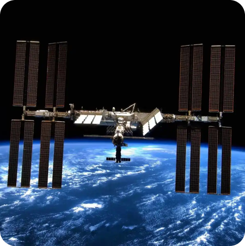
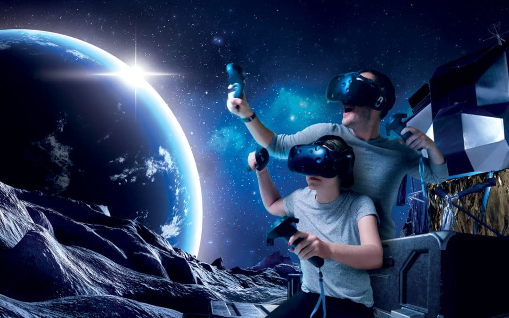

Explora la Estación Espacial Internacional (ISS) desde la comodidad de tu hogar con nuestro tour virtual. Sumérgete en cada módulo de la ISS, desde los laboratorios de investigación donde se realizan experimentos científicos de vanguardia hasta los camarotes donde los astronautas descansan durante sus misiones en el espacio. Descubre los secretos de la vida en gravedad cero mientras te desplazas por los pasillos y aprende sobre las actividades diarias de los astronautas a bordo de esta maravilla tecnológica que orbita la Tierra.
Tour Virtual por la Estación Espacial Internacional (ISS)
Descubre el Espacio en Realidad Virtual
¡Bienvenido a nuestra plataforma espacial! Sumérgete en el cosmos y explora la Estación Espacial Internacional como nunca antes con nuestra experiencia de realidad virtual. Aquí tienes algunas instrucciones simples para comenzar:
- Preparación: Antes de comenzar, asegúrate de tener tus lentes de realidad virtual listos y correctamente configurados.
- Acceso a la Experiencia: Ingresa a nuestra plataforma y dirígete a la sección de realidad virtual o selecciona el tour virtual por la Estación Espacial Internacional.
- Inicia el Tour: Haz clic en el botón "Empezar" para comenzar tu aventura espacial en realidad virtual.
- Exploración: Utiliza los controles de tu dispositivo VR para moverte dentro de la experiencia. Explora cada rincón de la ISS a tu propio ritmo y maravíllate con las vistas del espacio.
- Disfruta: Sumérgete en el mundo de la realidad virtual y disfruta de la increíble experiencia de estar en el espacio. Tómate tu tiempo para absorber cada detalle y aprender sobre la vida en gravedad cero.
¡Y eso es todo! ¡Es hora de comenzar tu viaje por el cosmos con nuestra experiencia de realidad virtual!
Tour Virtual por la Estación Espacial Internacional (ISS)
